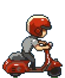
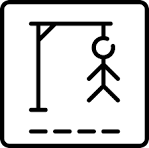
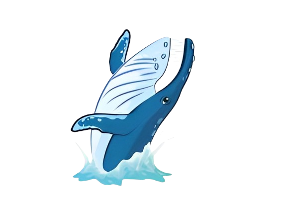
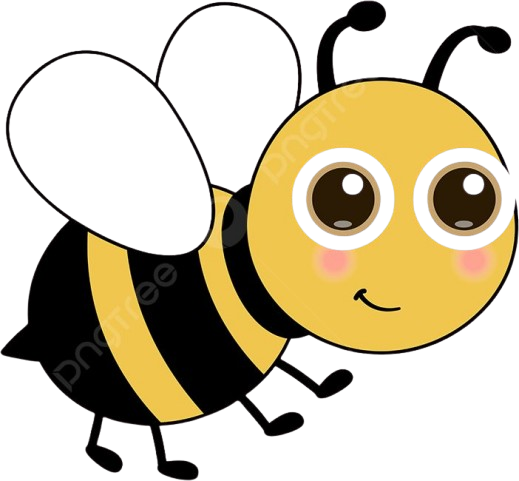

Jogos digitais pedagógicos acessíveis
Uma plataforma que reúne jogos para o professor utilizar com estudantes em aulas ou em sessões de treinamento com tecnologias assistivas (TAs).
Explorar os jogosConheça a plataforma de jogos
Jogar, aprender e participar
O hub reúne diferentes jogos pedagógicos em um único lugar. O professor pode escolher uma atividade, consultar as instruções e iniciar o jogo de acordo com os objetivos da aula ou da sessão de treinamento com TAs.
Os jogos compartilham recursos de acessibilidade e alguns oferecem opções para preparar conteúdos específicos. Assim, cada atividade pode apoiar diferentes formas de participação e aprendizagem.
Principais características
-
Jogos em um só lugar
Encontre diferentes atividades pedagógicas em uma única plataforma.
-
Varredura
A navegação por varredura facilita o uso com um acionador ou uma única tecla.
-
Uso com teclado / mouse ou acionador
Explore as atividades em diversas formas de interação e controle.
-
Alto contraste
Alterne para uma apresentação de maior contraste quando necessário.
-
Apoio à acessibilidade
Instruções e controles identificados ajudam a orientar o uso dos jogos.
-
Uso pedagógico
Selecione jogos para aulas e sessões de treinamento com tecnologias assistivas.
Aproveite ao máximo este App
Disponibilizamos materiais para ajudar você a conhecer os jogos, suas funcionalidades e as possibilidades de uso em aula.
Explore os jogos
Escolha uma atividade, leia as instruções ou abra as opções do professor.
Personalize sua experiência
Acessibilidade





Ajude-nos a melhorar
Seu feedback é muito importante. Envie um e-mail para nós contando sua experiência para identificarmos o que podemos melhorar, assim como os pontos positivos.
E-mail: cta@ifrs.edu.brContribua com o projeto
O projeto está hospedado no GitHub para que você, desenvolvedor ou empresa, contribua com melhorias ou correções caso encontre algum problema.
GitHub do projetoEntre em contato
Para conhecer mais sobre os trabalhos e projetos desenvolvidos pelo CTA, acesse nosso site ou redes sociais disponíveis na lista abaixo.